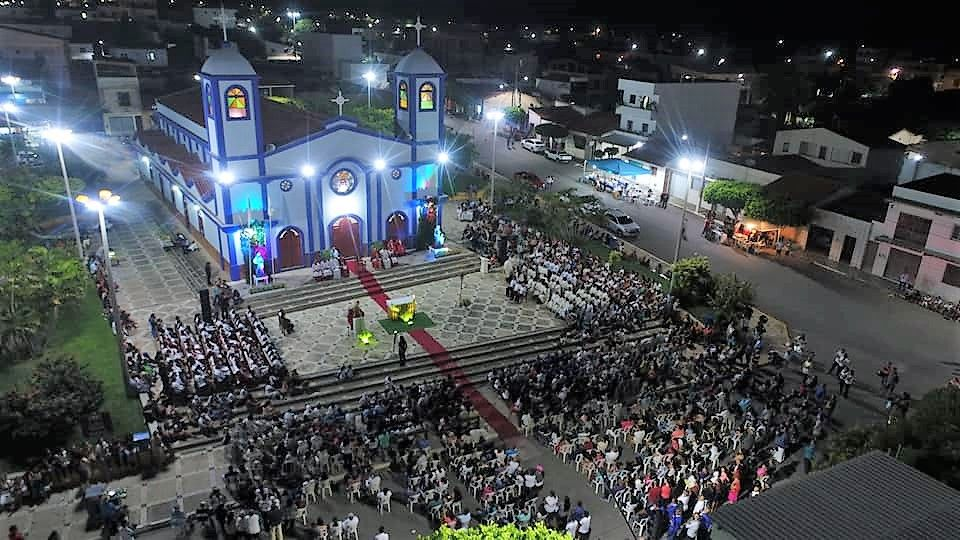

Informações técnicas sobre relevo, população, IDH etc.
| INFORMAÇÕES | |
|---|---|
| Municípios limítrofes | Norte: Guaraciaba do Norte; Sul: Ipueiras; Leste: Guaraciaba do Norte, Ipu e Ipueiras; Oeste: estado do Piauí |
| Fundação | 3 de maio de 1988 (33 anos) |
| População total | 17 802 hab. |
| Densidade | 25,4 hab./km² |
| Área total | 700,356 km² |
| Clima | Tropical subúmido |
| Altitude | 571 m |
| IDH | 0,557 — baixo |
| PIB | R$ 67 623,912 mil |
| INFORMAÇÕES TERRITORIAIS | |
|---|---|
| Número de habitantes | 18 063 habitantes |
| Superfície de Croatá |
69 698 hectares
696,98 km² (269,11 sq mi) |
| Densidade populacional | 25,9 ha./km² |
| Altitude de Croatá | 538 metros de altitude |
| Coordenadas geográficas decimais |
Latitude:
-4.40466
Longitude: -40.9124 |
| Coordenadas geográficas sexagesimais | Latitude: 4° 24' 17'' Sul , Longitude: 40° 54' 45'' Oeste |
| INFORMAÇÕES DO MUNICÍPIO | |
|---|---|
| Endereço da Prefeitura Municipal de Croatá |
Croatá
Prefeitura de Croatá
Prefeitura de Croatá Rua Manoel Braga,573 - Caroba CROATÁ - CE, 62390-000 Brasil Work (88) 3659-1164 Fax (88) 3659-1180 |
| Telefone da prefeitura |
(88) 3659-1164
Internacional: +55 (88) 3659-1164 |
| Fax |
(88) 3659-1180
Internacional: +55 (88) 3659-1180 |
| Endereço electrónicoda prefeitura |
A carregar...
|
| Site oficial do município | Croatá.ce.gov.br |
| INFORMAÇÕES DO ADMINISTRATIVAS | ||
|---|---|---|
| Prefeito de Croatá | RONILSON FRANCISCO DE OLIVEIRA | |
| Partido politico | MDB | |
| INFORMAÇÕES DE TRANSPORTE | |
|---|---|
| Transporte urbano disponível | --- |
| Aeroporto |
Aeroporto de Sobral 102.7 km
Aeroporto Pinto Martins 166.3 km
Aeroporto Internacional Prefeito Dr.João Silva Filho 191.3 km
|
| INFORMAÇÕES DE DISTÂNCIA A OUTRAS CIDADES | ||
|---|---|---|
| São Paulo : 2218 km | Rio de Janeiro : 2074 km | Brasília : 1481 km |
| Salvador : 989 km | Belo Horizonte : 1747 km | Manaus : 2128 km |
| Curitiba : 2505 km | Recife : 781 km | Goiânia : 1642 km |
| Belém : 905 km | Porto Alegre : 3052 km | Guarulhos : 2198 km |
| Campinas : 2163 km | São Luís : 431 km mais perto | São Gonçalo : 2182 km |
| Distância calculada em linha reta! | ||
Conheça mais sobre a história de Croatá.
As terras da serra dos Cocos, localizado no lado sul da Chapada da Ibiapaba, na divisa com as terras do sertão de Crateús, era habitados por nações indígenas como os tupis(tabajaras, tupinambás) e tapuias (calabaças, cararijus, kariris, inhamuns, karatis, jaburus, javanbés). Ao redor da primitiva capela de Nossa Senhora das Dores, desenvolveu-se o atual centro urbano, que se emancipou do Inhussu. A elevação do povoado a categoria de vila ocorreu segundo a lei n° 2.677, de agosto de 1929, e a de município conforme lei n° 8.339, de 14 de dezembro de 1965, antes de ser instalado e restaurado na forma da lei n° 11.430, de 28 de abril de 1988.
Saiba mais sobre os melhores lugares e o que fazer em Croatá.
Paroquia Nossa Senhora das Dores
A história religiosa desta localidade iniciou com a construção de uma capelinha em honra a N. Sra. das Dores. Esta foi benta em 1898 pelo vigário de São Benedito, Pe. Custódio de Almeida. Em 24 de janeiro de 1978, Dom Timóteo Francisco Nemésio Cordeiro, 1º Bispo da Diocese, cria o Curato de N. Sra. das Dores. Anos depois, em 14 de Maio de 1985, Croatá é elevado à categoria de Paróquia. tendo o primeiro pároco o Padre Luiz Gonzaga Gomes Furtado. Antes da criação da Paróquia, a futura Matriz passou por algumas reformas. Recentemente, Croatá precisou projetar a construção de uma nova Igreja, uma vez que a antiga, além de não ter nenhum valor arquitetônico, não respondia mais às necessidades da população católica local. Foi o Pe. Clodoaldo Carvalho da Silva, quem, na condição de novo pároco, liderou a realização da construção, secundado pelo participação generosa dos fiéis católicos de Croatá. O projeto arquitectônico se deve ao arquitecto Sérgio Linhares. Croatá, ao longo de sua história contou com 05 Párocos.Atualmente, quem conduz a paróquia é o Pe. Antonio Kelton Oliveira Marques.
Veja como chegar nos melhores pontos de Croatá